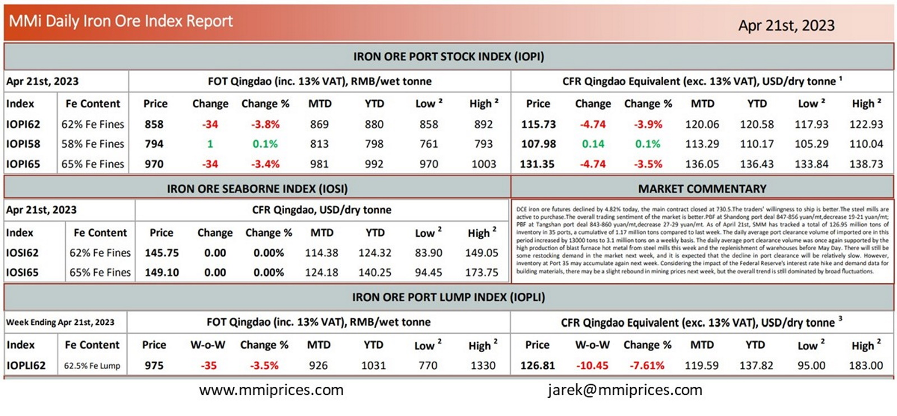

DCE iron ore futures declined by 4.82% today, the main contract closed at 730.5. The traders’ willingness to ship is better.The steel mills are active to purchase.The overall trading sentiment of the market is better. PBF at Shandong port deal 847-856 yuan/mt,decrease 19-21 yuan/mt; PBF at Tangshan port deal 843-860 yuan/mt,decrease 27-29 yuan/mt. As of April 21st, SMM has tracked a total of 126.95 million tons of inventory in 35 ports, a cumulative of 1.17 million tons compared to last week. The daily average port clearance volume of imported ore in this period increased by 13000 tons to 3.1 million tons on a weekly basis. The daily average port clearance volume was once again supported by the high production of blast furnace hot metal from steel mills this week and the replenishment of warehouses before May Day. There will sƟll be some restocking demand in the market next week, and it is expected that the decline in port clearance will be relatively slow. However, inventory at Port 35 may accumulate again next week. Considering the impact of the Federal Reserve’s interest rate hike and demand data for building materials, there may be a slight rebound in mining prices next week, but the overall trend is still dominated by broad fluctuations.

Download PDFSource: Metals Market Index (MMi)